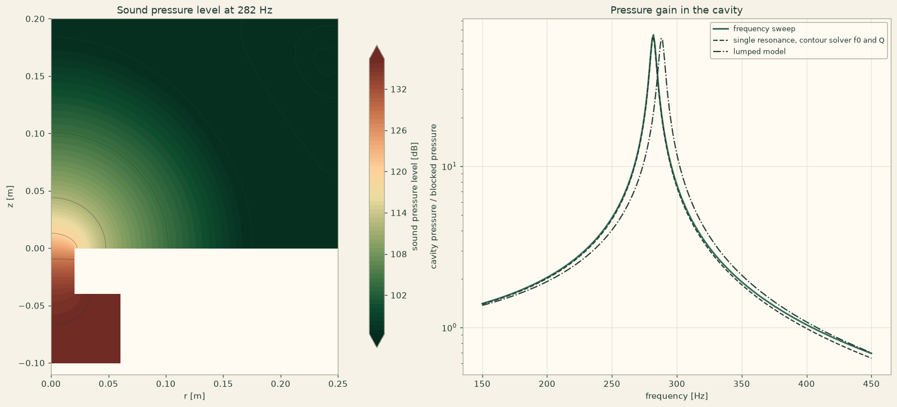
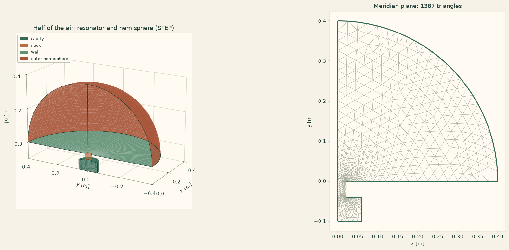

Docs › Examples › Helmholtz resonator in a wall
Pressure acoustics, frequency domain · 2D-axisymmetric
Helmholtz resonator in a wall
A plane sound wave falls on a rigid wall with a Helmholtz resonator set into it; the cavity pressure rises sixty-fold at resonance.

What it computes
OneSimulation reads resonator and hemisphere of air from a STEP file and solves the axisymmetric Helmholtz equation with quadratic elements, the incident wave entering through the spherical-wave admittance of the outer boundary. The same frequency-dependent pressure pencil is solved twice: as a frequency sweep with a direct solver and as a nonlinear eigenproblem with Beyn's contour-integral method, which returns the complex resonance. The script that builds the STEP file comes with the notebook.
What it checks
The contour solver finds the resonance at 281.8 Hz with Q = 63.8, 0.6 % below the resonator with the cavity treated as a closed tube (283.6 Hz) and 2.3 % below the lumped formula (288.4 Hz, Q = 62.8, +1.6 %); the swept cavity gain peaks at 65 times the blocked pressure, matching Q, and the sweep follows the single resonance built from f0 and Q to 3 % of the peak; mesh changes are below 5e-4.
Geometry
The notebook starts at the import of the CAD file helmholtz_resonator_baffle.step: STEP (AP242), readable by any CAD program, with the names of the faces that the boundary conditions use. Put it next to the notebook.

The geometry script
The script helmholtz_resonator_baffle_geometry.py builds the geometry with the CAD objects of OneSimulation and writes the file. Change a dimension there, run it, and run the notebook again.
"""Geometry of the OneSimulation example "Helmholtz resonator in a wall".
Builds the air of a Helmholtz resonator set into a rigid wall - a cylindrical cavity (radius 60 mm,
depth 60 mm) behind a neck (radius 20 mm, length 40 mm) - together with a hemisphere of air of
radius 0.4 m in front of the wall, as half a solid of revolution about the z axis with the CAD
objects of OneSimulation. It writes helmholtz_resonator_baffle.step with the faces cavity, neck,
wall and outer.
"""
import numpy as np
from onesim.cad.d2 import Path, Profile, Segment
from onesim.cad.d3 import Revolution
cavity_radius, cavity_depth, neck_radius, neck_length, outer = (
0.06,
0.06,
0.02,
0.04,
0.4,
)
bottom = -neck_length - cavity_depth
outline = Path(
(0.0, bottom),
(
Segment((cavity_radius, bottom), name="cavity"),
Segment((cavity_radius, -neck_length), name="cavity"),
Segment((neck_radius, -neck_length), name="cavity"),
Segment((neck_radius, 0.0), name="neck"),
Segment((outer, 0.0), name="wall"),
Segment((0.0, outer), center=(0.0, 0.0), name="outer"),
Segment((0.0, bottom), name="axis"),
),
)
Revolution(profile=Profile(outline), angle=np.pi).rotated((0, 0, 1), -np.pi / 2).save(
"helmholtz_resonator_baffle.step"
)The notebook
The complete notebook, cell by cell. Run it to produce the figures and the comparison printout.
A plane sound wave of amplitude \(p_0\) falls perpendicularly on a rigid wall. Without the resonator the wall reflects it, and the pressure on the wall is the blocked pressure \(2p_0\). Set into the wall is a Helmholtz resonator: a neck of radius \(a=20\) mm and length \(L=40\) mm in front of a cylindrical cavity of radius 60 mm and depth 60 mm (volume \(V\)). Near its resonance the air in the neck swings like a mass on the spring of the compressed cavity air, and the cavity pressure rises far above the blocked pressure.
The field is axisymmetric and is solved in the meridian plane \((r,z)\) as the sum of the known incident-plus-reflected wave \(p_b=2p_0\cos kz\) and the wave \(p-p_b\) that the resonator sends out. The computed region is the resonator and a hemisphere of radius 0.4 m in front of the wall.
| boundary | condition | |---|---| | wall, neck and cavity walls | rigid, \(\partial p/\partial n=0\) | | hemisphere of radius \(R=0.4\) m | \(p-p_b\) is an outgoing spherical wave, \(v_n=(p-p_b)\,(1+1/(ikR))/(\rho_0c)\) | | axis \(r=0\) | regular |
Reference. The lumped model (L. E. Kinsler et al., Fundamentals of Acoustics, 4th ed., §10.8) gives the resonance and the quality factor from the neck area \(S=\pi a^2\), the cavity volume and the effective neck length \(L'\),
where \(Q\) comes from the radiation resistance of the flanged opening alone (no viscous losses). The effective length adds the end corrections of both ends: \(0.8216\,a\) outside, for an opening in a wall (A. N. Norris and I. C. Sheng, J. Sound Vib. 135, 1989), and \(0.48\sqrt S\,(1-1.25\,a/R_\mathrm{cavity})\) inside the cavity (U. Ingard, J. Acoust. Soc. Am. 25, 1037, 1953). These corrections and the lumped picture itself are accurate to a few per cent. The cavity here is \(kH\approx0.3\) deep at resonance, so its air is not quite a lumped spring; the refinement that treats it as a closed tube of depth \(H\) and area \(S_c\) (Kinsler et al., §10.8) moves the resonance to the root of
import numpy as np
from onesim.cad.exchange import load
from onesim.meshing import TriangularMesher
from onesim.numerics.fem import FiniteElement, Lagrange, RevolvedH1SpaceFactory
from onesim.numerics.linear import BeynContourEigenSolver, elliptic_contour_quadrature
from onesim.physics.acoustics import (
AcousticHarmonicPressure,
AcousticPressureSpectrum,
ComplexPressurePencil,
ConstantPressureForms,
PressureAdmittanceBoundary,
PressureTraceSamples,
SampledPressureAdmittanceForms,
SampledPressureVolumeForms,
pressure_space_volume_samples,
)
from onesim.visualization import plots, theme
from scipy.optimize import brentq
from scipy.sparse.linalg import spsolve
theme.set()
c0, rho0, incident = 343.0, 1.204, 1.0
impedance = rho0 * c0
neck_radius, neck_length, cavity_radius, cavity_depth = 0.02, 0.04, 0.06, 0.06Geometry and mesh
The STEP file holds half of the air - resonator and hemisphere - as a solid of revolution; section with the plane \(y=0\) returns the meridian half-plane. The triangles are 1 mm at the two rims of the neck and grow to 25 mm (a fifth of the shortest wavelength) far away; a second mesh halves all sizes.
air = load("helmholtz_resonator_baffle.step")
plane = air.section((0, 1, 0))
outer = plane.size[1] - neck_length - cavity_depth
rims = np.array([[neck_radius, 0.0], [neck_radius, -neck_length]])
levels = (1.0, 0.5)
meshes = {
s: TriangularMesher(
target_size=0.025 * s,
size_field=lambda p, s=s: np.minimum(
0.025 * s,
s
* (
0.001
+ 0.15 * np.min(np.linalg.norm(p[:, None, :2] - rims, axis=2), axis=1)
),
),
).generate(plane)
for s in levels
}
view = plots.Camera(elevation=18, azimuth=-150)
fig = plots.figure(1, 2, size=(15, 6.5))
plots.geometry(
air,
selection={
"cavity": air.boundaries.cavity,
"neck": air.boundaries.neck,
"wall": air.boundaries.wall,
"outer hemisphere": air.boundaries.outer,
},
labels=False,
camera=view,
title="Half of the air: resonator and hemisphere (STEP)",
ax=fig[0],
)
plots.mesh(
meshes[1.0],
groups=("all",),
legend=False,
title=f"Meridian plane: {meshes[1.0].cell_count} triangles",
ax=fig[1],
)
plots.show()Model
RevolvedH1SpaceFactory makes the quadratic Lagrange space axisymmetric (weights \(2\pi r\)). SampledPressureVolumeForms integrates the volume forms; the hemisphere carries the spherical-wave admittance \(Y(\omega)\) and the load \(\int\big(\rho_0^{-1}\partial_n p_b+i\omega Y p_b\big)\phi_i\,\mathrm dS\) from the incident wave. The admittance is an analytic function of the complex frequency, so the same ComplexPressurePencil serves two solvers:
AcousticHarmonicPressuresweeps real frequencies from 150 to 450 Hz with a sparse direct solver;AcousticPressureSpectrumwithBeynContourEigenSolverfinds the complex frequencies inside an ellipse around the resonance where the pencil becomes singular: the real part is the resonance, the imaginary part its radiation damping, \(Q=\mathrm{Re}\,\omega/(2\,\mathrm{Im}\,\omega)\).
admittance = lambda omega: (1 + c0 / (1j * omega * outer)) / impedance
background = lambda omega, points: 2 * incident * np.cos(omega / c0 * points[:, 1])
background_flux = (
lambda omega, points: -2
* incident
* omega
/ c0
* np.sin(omega / c0 * points[:, 1])
* points[:, 1]
/ outer
)
frequencies = np.arange(150.0, 450.5, 1.0)
contour = elliptic_contour_quadrature(
2 * np.pi * 290.0, (2 * np.pi * 120.0, 2 * np.pi * 30.0), 48
)
def solve_resonator(level):
"""Frequency sweep and complex resonance of the resonator on one mesh."""
mesh = meshes[level]
space = FiniteElement(
element=Lagrange(order=2), provider=RevolvedH1SpaceFactory()
).bind_space(mesh)
volume = ConstantPressureForms(
*SampledPressureVolumeForms(
size=space.dof_count,
samples=lambda: pressure_space_volume_samples(space),
inverse_density=lambda omega, sample: 1 / rho0,
compressibility=lambda omega, sample: 1 / impedance / c0,
)(0.0)
)
surface = [
PressureTraceSamples(space.cell_dofs[owner], points, weights, basis)
for owner, points, weights, _, basis, _ in map(
space.trace_data, mesh.facets(plane.boundaries.outer)
)
]
trace = SampledPressureAdmittanceForms(
size=space.dof_count,
samples=lambda: iter(surface),
admittance=lambda omega, sample: 1.0,
)(0.0)
pencil = ComplexPressurePencil(
volume,
boundary=PressureAdmittanceBoundary(lambda omega: admittance(omega) * trace),
)
nodes = space.dof_coordinates
sweep = AcousticHarmonicPressure(
operator=pencil,
angular_frequencies=2 * np.pi * frequencies,
linear_solver=spsolve,
load=lambda omega: trace
@ (
background_flux(omega, nodes) / rho0
+ 1j * omega * admittance(omega) * background(omega, nodes)
),
).run()
probe = np.random.default_rng(7).standard_normal((space.dof_count, 4))
modes = AcousticPressureSpectrum(
operator=pencil,
eigensolver=BeynContourEigenSolver(contour=contour, probe=probe),
).run()
bottom = [[0.0, -neck_length - cavity_depth]]
return dict(
space=space,
mesh=mesh,
pressure=sweep.pressure,
dofs=space.dof_count,
omega=modes.angular_frequencies,
cavity=np.asarray(space.evaluate(sweep.pressure.T, bottom))[0],
)
runs = {level: solve_resonator(level) for level in levels}Results
The complex resonance from the contour solver, the peak of the swept cavity pressure, and the lumped model with the two end corrections.
S, V = np.pi * neck_radius**2, np.pi * cavity_radius**2 * cavity_depth
effective = (
neck_length
+ 0.8216 * neck_radius
+ 0.48 * np.sqrt(S) * (1 - 1.25 * neck_radius / cavity_radius)
)
f_lumped, Q_lumped = c0 * np.sqrt(S / (effective * V)) / (
2 * np.pi
), 2 * np.pi * np.sqrt(V * (effective / S) ** 3)
f_tube = brentq(
lambda f: 2 * np.pi * f / c0 * effective / S
- 1 / (np.tan(2 * np.pi * f / c0 * cavity_depth) * np.pi * cavity_radius**2),
150,
450,
)
print(
f"lumped model: effective neck length {1e3 * effective:.1f} mm, f0 = {f_lumped:.1f} Hz, Q = {Q_lumped:.1f}; "
f"cavity as a closed tube: f0 = {f_tube:.1f} Hz"
)
for level, run in runs.items():
omega = run["omega"][np.argmin(np.abs(run["omega"] - 2 * np.pi * f_lumped))]
gain = np.abs(run["cavity"]) / (2 * incident)
peak = np.argmax(gain)
run["f0"], run["Q"], run["peak"] = (
omega.real / (2 * np.pi),
omega.real / (2 * omega.imag),
peak,
)
print(
f"mesh {level}: {run['dofs']} unknowns; contour solver: {len(run['omega'])} resonance(s) in the ellipse, "
f"f0 = {run['f0']:.2f} Hz ({100 * (run['f0'] / f_lumped - 1):+.1f} % from lumped, {100 * (run['f0'] / f_tube - 1):+.1f} % from tube), Q = {run['Q']:.1f} "
f"({100 * (run['Q'] / Q_lumped - 1):+.1f} %); sweep: peak at {frequencies[peak]:.0f} Hz, "
f"cavity pressure / blocked pressure {gain[peak]:.1f}"
)
fine = runs[levels[-1]]
print(
f"change of f0 between the meshes {abs(fine['f0'] / runs[1.0]['f0'] - 1):.1e}, of Q {abs(fine['Q'] / runs[1.0]['Q'] - 1):.1e}"
)
single_mode = lambda f: fine["Q"] / np.abs(
fine["Q"] * (1 - (f / fine["f0"]) ** 2) + 1j * f / fine["f0"]
)
print(
f"sweep against the single resonance built from the contour solver's f0 and Q: largest deviation of the gain within "
f"f0 +- 10 Hz {np.max(np.abs(np.abs(fine['cavity']) / 2 - single_mode(frequencies))[np.abs(frequencies - fine['f0']) < 10] / fine['Q']):.1e} Q"
)Figure
The sound pressure level near the resonator at resonance (incident wave 1 Pa, i.e. 91 dB), and the cavity pressure over frequency from the sweep, against the single resonance with the contour solver's \(f_0\) and \(Q\) and against the lumped model.
i = fine["peak"]
x, z = np.asarray(fine["mesh"].coordinates).T
level = 20 * np.log10(
np.abs(
np.asarray(
fine["space"].evaluate(fine["pressure"][i], fine["mesh"].coordinates)
)
)
/ 2e-5
)
fig = plots.figure(1, 2, size=(16, 6.5))
plots.heatmap(
x,
z,
level,
triangles=np.asarray(fine["mesh"].cells),
limits=(level.max() - 40, level.max()),
contours=8,
label="sound pressure level [dB]",
xlabel="r [m]",
ylabel="z [m]",
xlimits=(0, 0.25),
ylimits=(-0.11, 0.2),
title=f"Sound pressure level at {frequencies[i]:.0f} Hz",
ax=fig[0],
)
plots.line(
frequencies,
{"frequency sweep": np.abs(fine["cavity"]) / (2 * incident)},
reference={
"single resonance, contour solver f0 and Q": single_mode(frequencies),
"lumped model": Q_lumped
/ np.abs(
Q_lumped * (1 - (frequencies / f_lumped) ** 2) + 1j * frequencies / f_lumped
),
},
scale="logy",
xlabel="frequency [Hz]",
ylabel="cavity pressure / blocked pressure",
title="Pressure gain in the cavity",
legend="upper right",
ax=fig[1],
)
plots.show()Going further
Change neck and cavity in helmholtz_resonator_baffle_geometry.py and write the STEP file again: a longer, narrower neck lowers the resonance and sharpens it. Viscous and thermal losses in the neck, which a real resonator has, enter as a complex density in the neck (inverse_density per quadrature point) and lower the gain well below the radiation-limited Q.